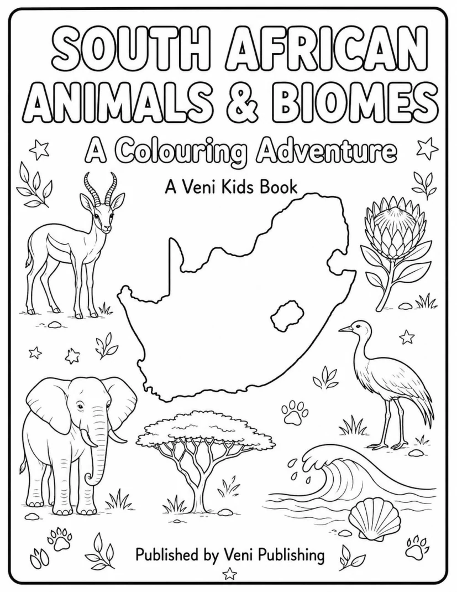

1
Colour and create
Large illustrations and activities make children active participants.
Colouring books, printable activities and educational resources that help children discover wildlife, landscapes, stories and ideas from home.

Creative participation meets clear, age-appropriate information in a recognisably South African collection.
Large illustrations and activities make children active participants.
Animals, biomes, languages and settings grounded in South Africa.
Future books, printables and educational media will live here.
Our first title is nearly ready, with more South African learning projects planned.
An 82-page colouring adventure with wildlife, biome maps, facts and activities.
Companion activities, samples and classroom resources.
Future colouring books, languages and educational media.